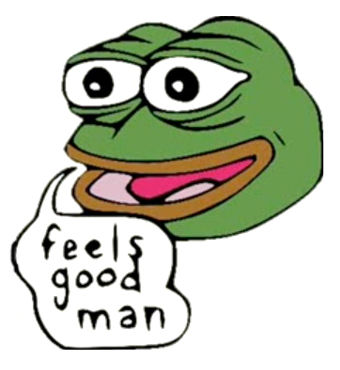

Pepe The Frog Selling Your Happy
Go to My bio
My name is Pepe.

5$
100$
30$
No.
Name
Date
Price
1
Normal Pepe
15 June 2019
30$
2
Happy Pepe
18 June 2019
50$
3
Super Ultimate Happy Pepe
30 July 2019
120,000 $
4
Super Happy Pepe
19 September 2019
50,000 $
1000$